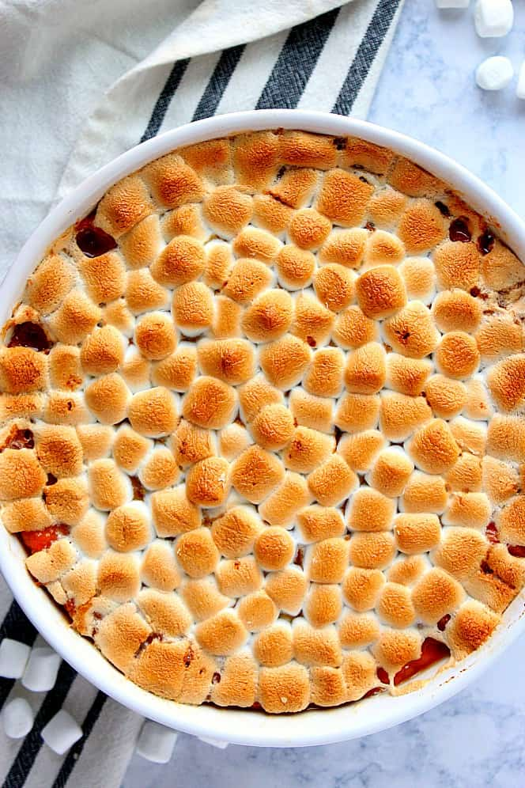

Sweet Potato Casserole

This sweet potato casserole is sprinkled with a nutty crumb topping to create a pleasantly crunchy contrast to
the creamy and soft mashed sweet potatoes down below. The filling gets an extra special pumpkin pie(ish)
treatment with brown sugar and vanilla for a deep caramel flavor. (In fact, leftovers can be heated up and
topped with a scoop of ice cream just like pie.) Want to make ahead for Thanksgiving or another special holiday?
Not a problem. The casserole ingredients can be mixed and transferred to a baking dish. Cover and refrigerate
until ready to bake but leave off the topping. Store it separately at room temperature in an air-right container
and sprinkle it on right before baking.
Sweet Potato Casserole Recipe
Steps
- For the sweet potatoes: Add 1 3/4 pounds peeled and cubed sweet potatoes to a large pot of salted water.
Bring to a boil over high heat, then lower the heat to a simmer and cook until the potatoes are very tender,
15 to 20 minutes. Drain and cool. Mash the sweet potatoes.
- For the filling: Preheat the oven to 350 degrees F. Butter a 2-quart baking dish.
- Whisk together the butter, mashed sweet potatoes, milk, brown sugar, vanilla, salt and eggs in a large bowl.
Transfer to the prepared baking dish.
- For the topping: Combine the flour, brown sugar, butter and salt in a medium bowl until moist and the
mixture clumps together. Stir in the pecans. Sprinkle the mixture over the top of the sweet potatoes in an
even layer. Bake until mostly set in the center and golden on top, 25 to 30 minutes. Serve hot.
Ingredients (Yields 6-8 Servings)
Filling
- 4 tablespoons unsalted butter, melted, plus more for buttering the baking dish
- 4 large sweet potatoes, peeled and cubed
- 1/2 cup milk
- 1/4 cup brown sugar
- 1 teaspoon pure vanilla extract
- 1/2 teaspoon kosher salt
- 2 large eggs
Topping
- 1/2 cup all-purpose flour
- 1/2 cup brown sugar, packed
- 4 table spoons unsalted butter, melted
- 1/4 teaspoon kosher salt
- 3/4 cup chopped pecans